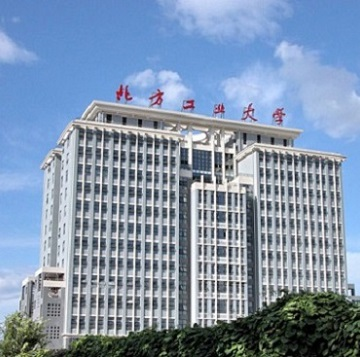

1946年，北方工业大学的前身国立北平高级工业职业学校创立，新中国成立以后， 学校经历了北京重工业学校、北京钢铁学校、北京冶金专科学校、石景山冶金学 院等几个发展阶段。 1978年，经国务院批准，成立北京冶金机电学院。 1984年，学校划归中国有色金属工业总公司领导，是总公司重点建设的一所院校。 1985年经国务院批准，由北京冶金机电学院易名为北方工业大学。 1998年，学校改由中央与北京市共建、以北京市管理为主。 1998年，学校划归到北京管理之后，为适应经济社会发展的需要，学校提出了“立 足北京、面向全国、面向有色金属工业、重点为首都经济和社会发展服务”的服务 定位。
校风：“严肃、严格、严谨”。 “三严”校风经长期实践，已经得到师生和社会比较广泛的认同。其具体内涵为：严 肃敬业的态度、严格科学的管理、严谨求实的学风。其核心是从严治校，始终把人 才培养的质量放在第一位。 校训：“敦品励学 才德并懋”。 敦：勉力；励：通“砺”，磨练之意。懋：通“茂”，美盛之意。“敦品励学、才德并 懋”的含义是：“品行与学业同修，才学与美德并茂。”这一提法，具有深厚中国精 神传统的底蕴。同时强调了社会主义大学对人才培养的要求，也体现了学校培养 基础扎实、实践能力强、具有创新精神、综合素质高、适应社会发展需要的应用 型高级专门人才的目标。
校标释义 校标的中心图案由三个叠放的“人”字与天宇运行轨迹组成。 三个叠放的“人”字，寓意北方工业大学在人才培养中坚持“以人为本”的育人理念， 培养具有完善“人性、人格、人品”的人才。 它似圆规，寓意知识与实践是成才的根基，也象征治校做人的规矩与方圆，较为 完善地诠释了校训：“敦品励学，才德并懋”。 它似树——十年树木，百年树人，寓意北方工业大学在教学和科研中为国家培养的 无数栋梁之才。 它似山，寓意北方工业大学坐落于北京风景秀丽的西山脚下。天宇的运行图形， 既寓意北方工业大学未来广阔的发展空间与前景，又寓意北方工业大学博大的胸 怀与抱负，也寓意北方工业大学始终追寻高新科学技术的创新与发展。
这栋二层的建筑就是北方工业大学的第一个食堂， 与它的历史不同，食堂里面宽敞明亮，一排排座位 整齐的排列着，可以容纳1500人同时就餐。食堂分 为两层，一层食品的种类很多，有麻辣烫、主食区 、快餐区、砂锅区和冷盘区等等。在这里，除了正 餐，你还可以品尝到特色的麻酱风味麻辣烫，种类 繁多的面食和精品砂锅，如果你是一个注重营养的 人，还可以在冷盘区买上一份新鲜的时令水果，与 同学边聊天边吃。你也不用担心会口渴，在食堂的 两边，还有冷藏柜可以方便同学们购买各式饮料。 就餐的空间大，可供选择的饭菜种类也多，自然人 流也是最多的了。只要是吃饭的时间，这里的窗口 ，都是排满了前来品尝美食的同学们。
现在在我们面前的是第三食堂，第三食堂与清真食 堂相通，是一个面积较大的食堂。刚跨进门去，让 你眼前一亮的便是硬件设施的摆放，宽大的实木桌 椅让你有种在饭店用餐的感觉，所以同学聚会多选 在这里。里面的快餐种类非常的多，各式各样的盖 浇饭，炒饭炒饼，汇集众多口味的菜色，独具风味 的麻辣烫，独立的主食窗口等等。最特别的要数最 近新推出来的炖品窗口了，在寒冷的冬日，喝上一 口热热的汤，品尝一下砂锅的美味，是多么幸福的 事。在这里，吃饭变成了一种享受，用餐变成了一 种快乐。假日休闲时，如果你想和要好的朋友们一 起聚餐，聊聊生活上的趣事，那第三食堂一定是你 最好的选择。
清真食堂位于第三食堂的旁边，并与其相通，从外 形看就颇有回族风味的感觉，它以民族风味为主， 综合全国各地的口味。进入里面，会有阵阵羊肉香 扑面而来，在这里，不仅有其他食堂提供的美味的 快餐，各式各样的盖浇饭，面食，作为回民食堂， 精美的牛羊肉菜肴更是吸引了大批汉族同学前来品 尝。清真食堂不仅是一日三次吃饭的地方，更是穆 斯林同学温暖的家。学校为了提高饭菜质量，更在 饭菜上下功夫，为同学们研究各式各样的新菜色， 食堂的硬件条件也在不断更新，努力为同学们提供 更好的用餐环境。在这里，民族与民族融合，大家 一同吃饭一同欢乐，可谓是北方工业大学一大特色 。
食品卫生等级B级的二食堂有火锅区、零食区、台 湾卤肉饭区、面食区、普通饭菜区、早点区及奶茶 区。馒头、包子、烧饼搭配卤蛋、豆腐脑在睡意尚 存的清晨提供充分的营养;随意搭配的炒菜米饭为 疲惫的身体提供充足的营养.各色的汤类温暖空虚 的胃,丰富的饮料激发身体的活力.特色的卤肉饭醇 香可口,不断更新的品种更添魅力.面条米饭饺子是 二食堂的风味小吃,重庆火锅在严寒的冬季深受学 生喜爱。
食品卫生等级B级的四食堂是有着北京独特气势的平 房,与五食堂合并后更是宽敞.四食堂设有拉面小笼 包区、原磨豆浆柜台、手工水饺区、西安砂锅区、 山西烧饼区、精品盖饭区、营养快餐区、蛋糕房、 长风水吧和小卖部.其中蛋糕房为四食堂独特的风景 线,美味的糕点为偏爱甜品的同学提供便利.小笼包 凭借小巧的造型和独特的口味深受同学欢迎.色香味 俱全的盖饭在好评声中成为四食堂的又一特色.
食品卫生等级A级的七食堂共有三层,三层为国教餐 厅是宴请会议招待中心,二层主要供教工用餐,一层 为学生食堂.一层设有冷荤间、炒菜区、主食区、特 色风味区、小卖部.冷荤间不断推出各种菜色以满足 同学需要。炒菜分为中高低档，各色营养统一搭配。 烤红薯玉米饼为同学带来粗粮的美味.七食堂以面食 为主打,有着各种卤面和不同口味的米线。小卖部为 同学们带来各种饮料和零食,满足空余时间的需要.
1、乘地铁至古城站，换乘318路公共汽车北方工大站下车； 2、乘地铁至八角游乐园站，换乘663路公共汽车北方工大站下车； 3、乘地铁至八宝山站，换乘961路公共汽车北方工大站下车； 4、乘地铁至海淀五路居站，换乘336路公共汽车西黄村小区站下 车（学校北门进入）； 5、乘336、977、370、981路公共汽车西黄村小区站下车（学校北 门进入）。